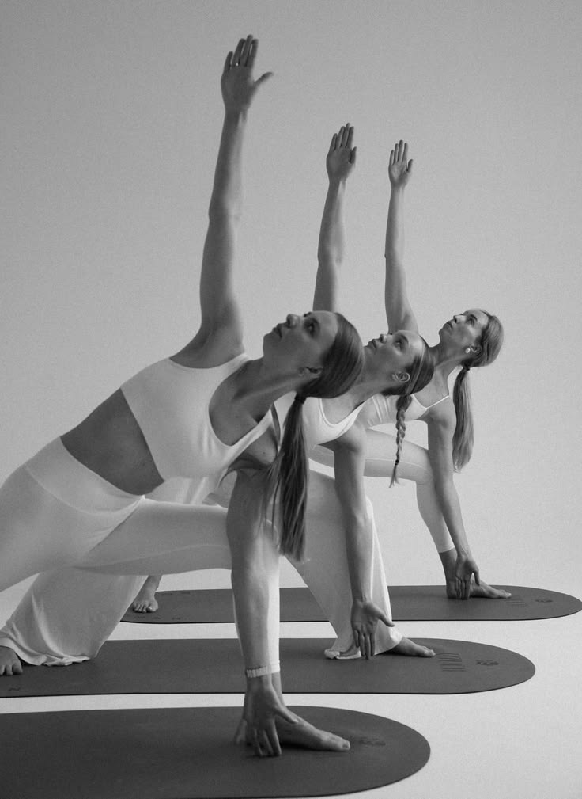
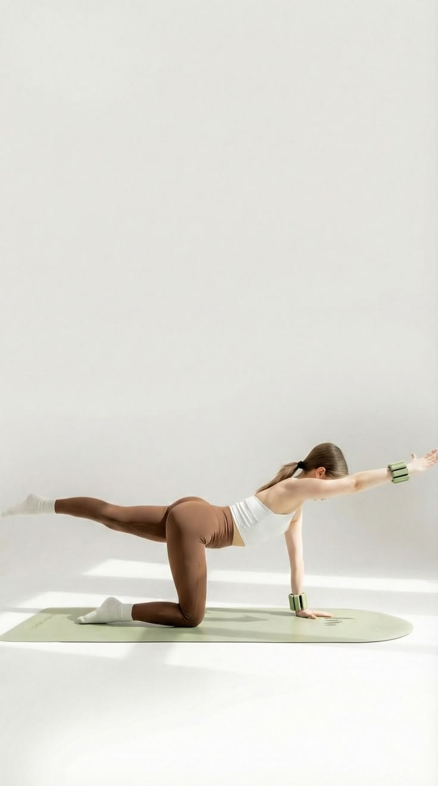
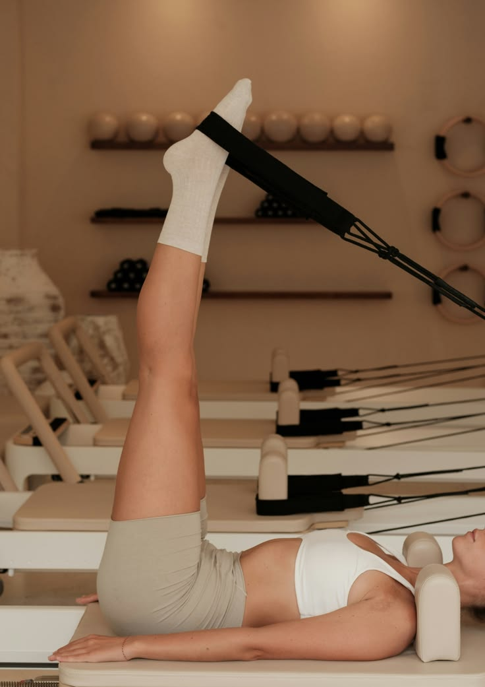
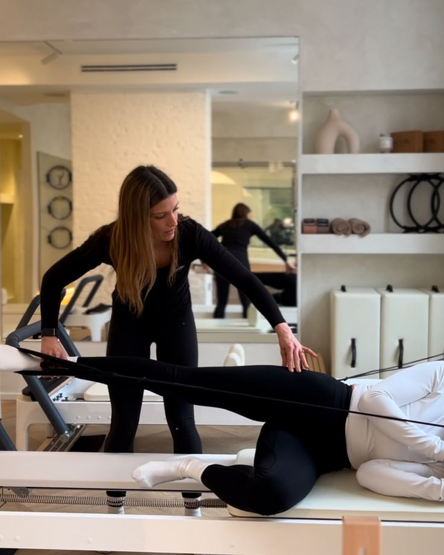
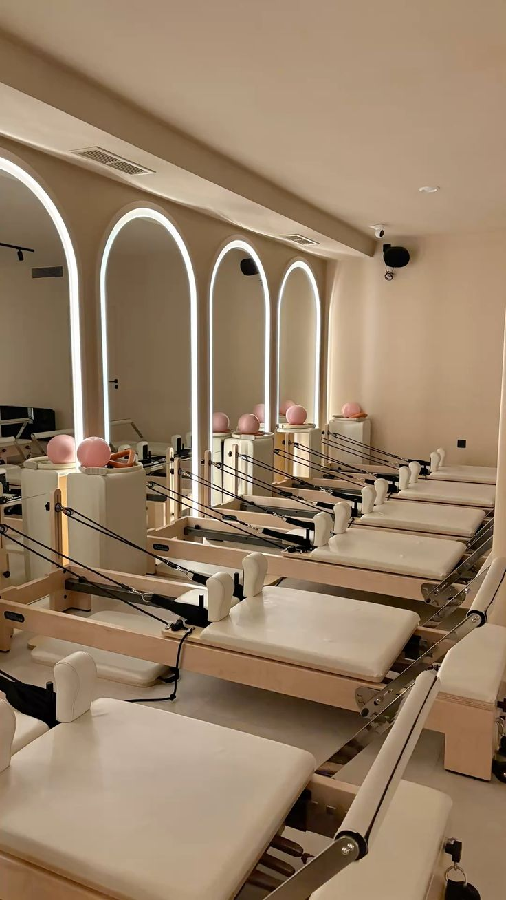
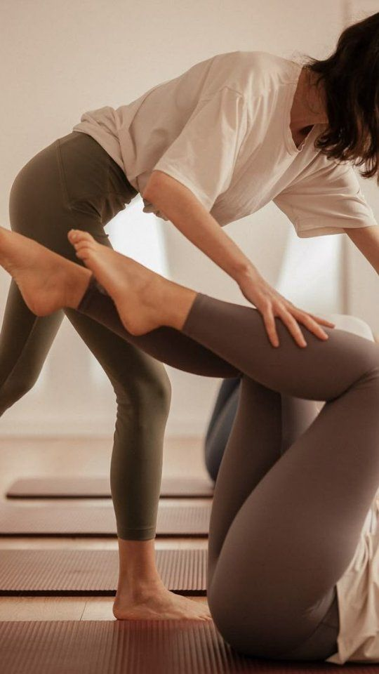
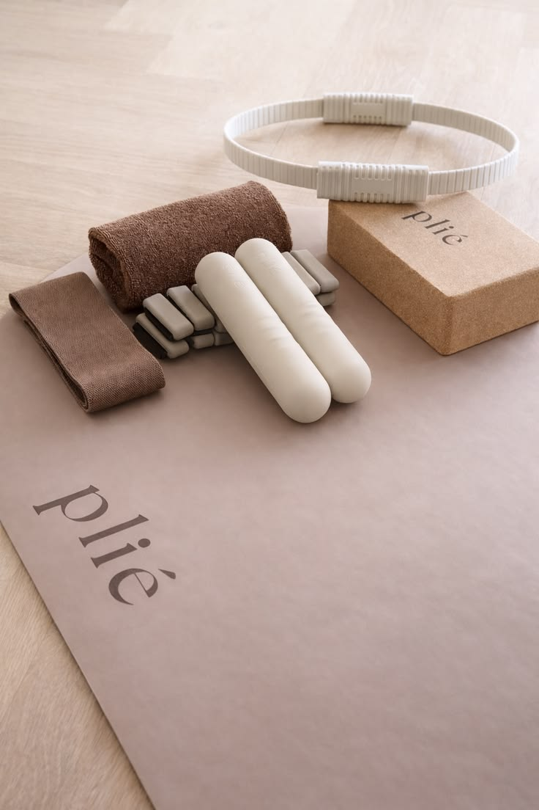

Pilates mat
Clases realizadas sobre tapete que combinan ejercicios de fuerza, flexibilidad y control corporal. Son ideales para mejorar la postura, fortalecer el abdomen y comenzar a practicar Pilates.

En Alma Pilates Studio creamos un espacio tranquilo donde puedes fortalecer,estirar y conectar con tu cuerpo mediante clases de Pilates diseñadas para diferentes niveles y objetivos.

Alma Pilates Studio nació con la idea de crear un espacio donde el ejercicio se sintiera como un momento para reconectar contigo mismo. Nuestro estudio combina movimiento, respiración y concentración en un ambiente tranquilo,cálido y acogedor.
Nuestro proposito es ayudarte a sentirte más fuerte, flexible y seguro de tu cuerpo. Contamos con clases para distintos niveles y acompañamiento personalizado para que cada persona pueda avanzar a su propio ritmo y disfrutar del proceso.
Clases realizadas sobre tapete que combinan ejercicios de fuerza, flexibilidad y control corporal. Son ideales para mejorar la postura, fortalecer el abdomen y comenzar a practicar Pilates.

Entrenamiento utilizando el reformer para trabajar fuerza, estabilidad y movilidad. Los ejercicios pueden adaptarse a diferentes niveles, permitiendo desarrollar un entrenamiento completo y controlado.

Sesiones enfocadas en tus necesidades y objetivos, con ejercicios adaptados a tu nivel. Recibe atención personalizada para mejorar tu técnica, progresar de manera segura y disfrutar cada entrenamiento.





Da el primer paso hacia una rutina que te haga sentir mejor. Conoce nuestras clases y encuentra la opción ideal para comenzar tu experiencia en Alma Pilates Studio.